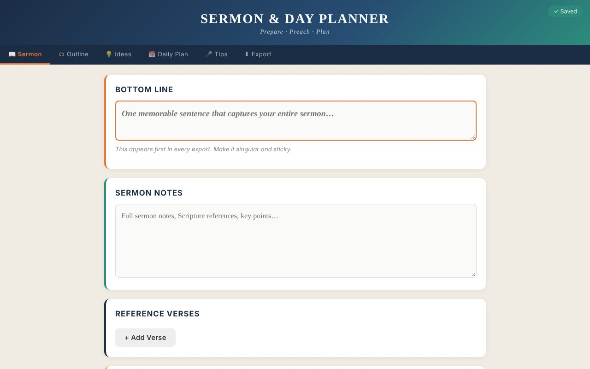

Working draft · Updated Apr 6, 2026
Sermon & Day Planner
A planner for building a sermon outline and planning your day. It has sections for sermon ideas, reference verses, illustrations, notes, a bottom line, a daily plan, and public speaking tips, plus export and a print-friendly outline.